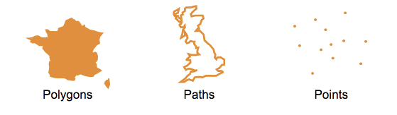
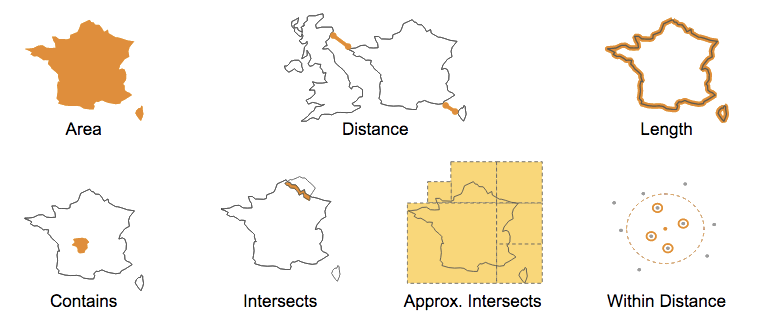

Geospatial Guide¶
With version 4, MemSQL has added support for geospatial queries. The term “geospatial” covers a very broad range of features. There is a formal standardization for some of those features, known as SQL-MM or OpenGIS. The features in MemSQL are not yet a complete implementation of that standard, but follows the same structure.
At a basic level, geospatial support requires three things: datatypes, topological functions, and measurement functions.
Geospatial types¶
The three main geospatial object types are points, paths, and polygons. We support a subset of the standard “Well-Known Text” (WKT) syntax to describe them. For example, a POINT is a simple longitude / latitude pair. Note the lack of a comma between the numbers.
"POINT(-74.044514 40.689244)"
A linestring or path object is an ordered list of points. Note the double parenthesis around pairs of numbers, which are separated by commas.
"LINESTRING((0 0, 0 1, 1 1))"
A polygon is similar to a linestring, except that it is “closed”, that is to say, it must have at least three unique points, and the first and last point-pairs must be equal:
"POLYGON((0 0, 0 1, 1 1, 0 0))"
You can also describe multiple shapes inside a polygon object, for example, a set of islands, or a lake inside a country.
"POLYGON((0 0, 0 1, 1 1, 0 0), (5 5, 6 5, 5 6, 5 5))"
All geospatial functions can accept either a geospatial object or the equivalent WKT string as arguments. MemSQL does not yet support the MULTIPOLYGON, GEOMETRY, CURVE, or other keywords.
Creating a geospatial table¶
Geospatial objects are just another data type in MemSQL and can be used right alongside numbers, strings, and JSON. To create a column that holds point data, use the GeographyPoint type. For path and polygon data, use the Geography type.
Note
It is possible to store POINTs in the Geography type, but is not recommended. The GeographyPoint type was designed specifically for point data, and is highly optimized for memory efficiency and speed.
In this example, we’ll create a table of neighborhoods. The “centroid” field is the point that is roughly in the middle of the borders of the neighborhood. The “shape” field is the polygon describing those borders. All geospatial data can be indexed for very high query performance.
create table neighborhoods (
id int unsigned not null primary key,
name varchar(64) not null,
population int unsigned not null,
shape GEOGRAPHY not null,
centroid GEOGRAPHYPOINT not null,
index (shape) with (resolution = 8)
index (centroid),
);
insert into neighborhoods values
(1, "Hamilton", 12346, "POLYGON((....))", ...),
(2, "Probability Bay", 263951, "POLYGON((....))", ...),
(3, "Decentralized Park", 29265, "POLYGON((....))", ...),
(4, "Axiom Township", 845696, "POLYGON((....))", ...)
...
Querying geospatial data¶
You can run queries over the neighborhood data to see how they relate to each other spatially. For example, you can join the table to itself and measure distances between neighborhoods:
memsql> select b.name as town,
-> round(GEOGRAPHY_DISTANCE(a.centroid, b.centroid), 0) as distance_from_center,
-> round(GEOGRAPHY_DISTANCE(a.shape, b.shape), 0) as distance_from_border
-> from neighborhoods a, neighborhoods b
-> where a.id = 2
-> order by 2;
+---------------------+----------------------+----------------------+
| town | distance_from_center | distance_from_border |
+---------------------+----------------------+----------------------+
| Probability Bay | 0 | 0 |
| Lower Bound Valley | 1924 | 0 |
| Axiom Township | 2907 | 0 |
| Elegant Island | 4551 | 1935 |
| Upper Bound Hill | 7866 | 5632 |
| Big Endian | 11374 | 9016 |
| Little Endian | 19275 | 17290 |
| Isle Zero | 19439 | 17163 |
...
You can also find out where you are with GEOGRAPHY_INTERSECTS:
memsql> select id, name from neighborhoods where
-> GEOGRAPHY_INTERSECTS("POINT(-73.94990499 40.69150746)", shape);
+----+----------+
| id | name |
+----+----------+
| 1 | Hamilton |
+----+----------+
1 row in set (0.00 sec)
Spatial Joins¶
Geospatial objects are first-class datatypes in MemSQL, which means that you can use spatial relationships to join tables. For example, to find all of the businesses in your neighborhood, you join the businesses table with the neighborhoods table on whether the business location (a point) is contained by the neighborhood’s shape (a polygon).
memsql> select b.id, b.name from businesses b, neighborhoods n
-> where n.name="Abstract Island" and
-> GEOGRAPHY_CONTAINS(n.shape, b.location);
+----+------------------------------+
| id | name |
+----+------------------------------+
| 2 | Touring Machines Bike Repair |
| 17 | Random Slice Pizza |
| 34 | The Philosopher's Diner |
| 51 | Push & Pop Cafe |
...
These functions and many more are documented in the MemSQL Geospatial Reference.
Geospatial Model¶
MemSQL 4 uses a spherical model similar to that used in Google Earth. It assumes a perfectly spherical Earth with a radius of 6,367,444.66 meters. The real Earth is not a sphere. It resembles an ellipsoid slightly wider than it is tall, with many local variations. In a spherical model, measurements of distance and area may vary from reality. For example, a 10,000 meter line drawn vertically over San Francisco would measure about 10,020 meters in this model. Topological functions, which describe the relationships between shapes and points, less affected by this difference.
Columnstore Geospatial¶
In MemSQL 4, geospatial data and functions are supported in columnstore (ie on-disk) tables. Columnstore tables do not yet support indexes on geo data. The native GeographyPoint type is supported but the Geography type is not. However, you can store path and polygon data in a plain text field, and run geospatial functions over them just as you do with rowstore (in-memory) tables.
create COLUMNSTORE table neighborhoods_columnstore (
id int unsigned not null,
name varchar(64) not null,
population int unsigned not null,
centroid GEOGRAPHYPOINT not null,
shape TEXT not null
);
insert into neighborhoods_columnstore values
(1, "Hamilton", 12346, "POLYGON((....))", ...),
(2, "Probability Bay", 263951, "POLYGON((....))", ...),
(3, "Decentralized Park", 29265, "POLYGON((....))", ...),
(4, "Axiom Township", 845696, "POLYGON((....))", ...)
...
select id, name from neighborhoods_columnstore where
GEOGRAPHY_INTERSECTS("POINT(-73.94990499 40.69150746)", shape);
Special Spatial Tuning Parameters¶
Spatial indices on Geography columns may be given an optional RESOLUTION parameter. You can choose a resolution between 6 and 32. This controls how many pieces the polygons and linestrings are broken up into for indexing. As a general rule, a lower number means less memory consumption, faster inserts & updates, but slower query times. A higher number may increase query performance at a cost of memory and insert performance.
Note
As with all tuning knobs, these parameters are not magic. Knobs should only be twiddled if you have a measurable need for more performance and have worked through the tradeoffs between ingest, computational load and memory consumption.
For example, it may be useful to compare the percentage difference in the number of rows returned by GEOGRAPHY_INTERSECTS and APPROX_GEOGRAPHY_INTERSECTS. This difference is the “false positive” rate of the index for a given resolution. For example, at resolution 16, suppose that 10% more records are returned by the approximate function. At resolution 8, the rate only grows to 11%. In that case you should be able to save memory and increase ingest throughput by using the lower number, without significantly harming query performance. Again, this kind of tuning is highly dependent on your particular dataset and workload. The parameters obtained for one application may not apply to another. Your mileage may vary.
You can also change the resolution of polygons passed into geospatial functions at query time. In this example, the resolution of the “shape” column is unchanged, but the POLYGON in the second argument is broken into 16 parts. Each part is queried separately. A lower number will result in fewer index lookup operations, but may return more false positive candidates from the index which are then filtered out of the result set in the second phase of query execution.
select *
from neighborhoods with (index = shape, resolution = 16)
where geography_intersects(shape,"POLYGON(...)");
Using GeoJSON Data¶
MemSQL as of version 4 does not have native GeoJSON support. However, we have generic JSON support as well as computed columns. Combining these features, you can import a subset of GeoJSON data into MemSQL the type system automatically.
For example, given a set of GeoJSON points like this:
{
"type": "Feature",
"geometry": {
"type": "Point",
"coordinates": [123.456, 78.901]
},
"properties": {
"id": 123456,
"name": "Probability Bay Naval Observatory"
}
}
You can construct a table like this:
memsql> create table geostuff (
-> id as dataz::properties::%id persisted bigint unsigned,
-> name as dataz::properties::$name persisted varchar(128),
-> location as geography_point(
-> dataz::geometry::coordinates::%`0`,
-> dataz::geometry::coordinates::%`1`
-> ) persisted geographypoint,
-> dataz JSON not null,
-> index (location)
-> );
And then insert the JSON string:
memsql> insert into geostuff (dataz) values ('{"type": "Feature", "geometry": {"type": "Point","coordinates": [123.456, 78.901]},"properties": {"id": 123456, "name": "Probability Bay Naval Observatory" }}');
memsql> select id, name, location from geostuff;
+--------+-----------------------------------+---------------------------------+
| id | name | location |
+--------+-----------------------------------+---------------------------------+
| 123456 | Probability Bay Naval Observatory | POINT(123.45600012 78.90100000) |
+--------+-----------------------------------+---------------------------------+
- See Also